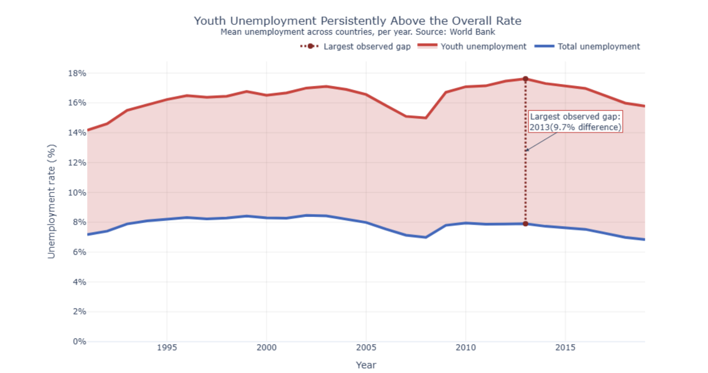
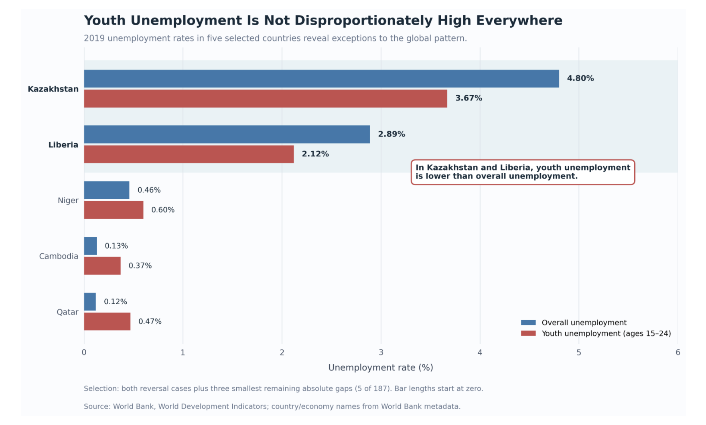

Proposition: Youth unemployment is disproportionately higher than overall unemployment.
FOR the Proposition

Design Decisions and Rationale:
- Decision #1: Use of aggregation on the dataset (fully deceptive, -2). As youth unemployment skyrocketed in certain countries, we wanted a statistic that seems reasonable on paper but quietly reinforces a narrative. We used a mean across countries per year. Of the 9041 observations per country per year, the data was reduced to two series of 30 years, equaling 60 data points. Alternatives would have been graphing individual countries or cherry-picking certain countries, but by “aggregating,” the graph has a certain appeal to the masses. Ultimately, the graph says nothing about which countries are aggregated for each data point, so this decision feels the most deceptive.
- Decision #2: Highlighting the largest gap in the dataset (earnest, +1). The largest gap calls attention to itself. While overlapped line graphs call attention to differences in the data, the largest “gap” was not immediately apparent. Since the unemployment gap has a lot of shock value, it felt appropriate to include the distance, annotated, easy to read out, and still following the red vs. blue color scheme. The graph could have left this out, but the specific data point is compelling, and because the largest gap falls toward the more recent tail end of the dataset, it makes the issue feel more current. The choice did not feel very deceptive, since we only presented a relevant data point, but it is hard to call it fully neutral as well.
- Decision #3: Title, color and visual hierarchy (somewhat deceptive, -1). The title leads very strongly, framing the data as evidence of a problem. The choice of red and blue is deliberate: knowing the youth unemployment rate would sit above the total rate, we could use color association. We chose a title and colors that raise alarm when seen, framing the finding as a problem to resolve. Alternatives were two black lines, or a color that represents the data (youth) more neutrally. The color choice, along with the next decision, adds an interpretation to the data before the data is well understood.
- Decision #4: Visual hierarchy, continued: red shading between the lines (earnest, +1). We chose to fill the gap between the two lines with red. Visually, this calls attention to the center of the graph first. We wanted to avoid readers manually trying to understand the gap they were seeing, so choosing red, which again taps into the color used for youth, also causes the viewer to see the distance as bad. Alternatives could have been a different color or a different fill option, but the choice of fill and color, in the context of such a persistent gap, frames the problem as persistent. Ultimately, these choices were more persuasive than deceptive, since the underlying data already tells this story.
AGAINST the Proposition

Design Decisions and Rationale:
- Decision #1: Selective country sampling (fully deceptive, -2). Although the dataset contained 187 countries and economies, we deliberately extracted both reversal cases (Liberia and Kazakhstan) and the three remaining countries with the smallest absolute gaps. An alternative would have been displaying all 187 countries or a representative sample. By showing only countries where youth unemployment is not much higher, the reader is led to assume such disparities are less widespread than they actually are. This withholding of information and selective display felt fully deceptive.
- Decision #2: Visual hierarchy and emphasis (somewhat deceptive, -1). We placed Liberia and Kazakhstan at the top because they offer the most obvious evidence for the argument. We also bolded their labels, grouped them under light blue shading, and added an annotation explicitly calling out the reversals. The alternative was uniform styling and ordering across all five countries. By de-emphasizing the other three, we draw the audience to the most extreme cases first. We rated this somewhat deceptive because all five countries remain visible and the underlying numbers are accurate and accessible.
- Decision #3: Consistent color encoding and grouped bars (earnest, +1). The same encoding is used for every country: blue for overall unemployment and red for youth unemployment, with identical bar sizing. The annotation adds persuasion, but the encoding itself is not altered between countries. An alternative would have been neutral colors with no annotation. Our approach improves clarity while reinforcing our chosen interpretation.
- Decision #4: Numerical transparency and axis scaling (earnest, +2). The x-axis starts at zero and extends to 6%, covering all displayed values with no truncation or exaggerated bar lengths. Exact percentages are printed beside each bar. We disclose that only five of 187 countries/economies in 2019 are shown and cite the World Bank as the source to support verification and reproducibility. An alternative would have been truncating the axis and omitting the methodological note.
Final Reflection
Both charts use accurate World Bank data, yet they support opposite conclusions. The persuasion came from choices about what to include and emphasize, not from falsified values.
Our most deceptive decisions were about what to show: picking 5 of 187 countries (-2), and averaging across countries without saying which ones are included (-2). Choices about visual form, such as shading, bolding and annotations, were less deceptive because the underlying numbers stayed visible. Our most earnest choices, zero-based axes, printed values, a source line and a note that only five countries were shown, gave readers the means to check us.
The dividing line between persuasive and deceptive seems to be disclosure: when a chart says how its data were selected and summarized, readers can discount the framing themselves. As readers, we will now ask how cases were chosen, how values were aggregated, and whether a highlighted example is typical or extreme.